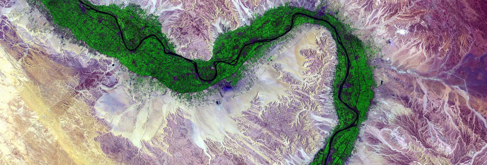

Portfolio support
Alignment Sprints
The execution risk more capital cannot fix.
The problem
Every GP knows it. Very few have an instrument for it.
A portfolio company rarely underperforms because the founders lacked talent. It underperforms because a founding team could not make a decision under pressure, could not resolve a disagreement that had been running for two years, or could not tell the board the truth early enough for the board to be useful.
Every GP knows this. Very few have an instrument for it.
What it is
The patterns underneath the behavior, not the behavior alone.
Alignment Sprints work on the patterns underneath the behavior rather than the behavior alone: the assumptions, defaults and unexamined commitments that determine how a leadership team acts when the runway shortens and the decision is expensive.
Led by Iana Lahi, applying methodologies developed across five decades of executive and leadership practice.
The work starts from the position that a team’s behavior under pressure is not a personality problem but a pattern, and that patterns can be surfaced, named and changed faster than most leadership teams believe.
What it addresses
- Board and executive team friction
- Role ambiguity after a raise changes the org
- The technical founder to commercial CEO transition
- Co-founder conflict that has calcified into avoidance
- A leadership team that has stopped telling each other the truth
- Decision paralysis at the point where the decision is most expensive
Confidentiality
The boundary that makes the work possible.
Individual session content is confidential and stays that way. What the fund receives is a readout on organizational readiness and a position on whether the execution risk has moved.
That boundary is what makes the work possible. Without it, people manage the process instead of doing the work.
Structure and terms
Three months, sequenced.
Individual sessions and collective sessions, sequenced. Opens with an assessment of where the friction actually sits, which is rarely where the fund thinks it sits.
- Duration
- Three months
- Structure
- Monthly retainer, opening with a paid definition phase
- Who buys
- The fund, or the company

Before you ask for it
Fifteen lines about how a team behaves under pressure.
Execution risk does not show up in a data room. It shows up in a decision deferred across four board cycles, a disagreement that calcified two years ago, and a board that receives bad news with the numbers rather than before them.
Fifteen statements mapped to the execution dimensions we score: conflict metabolism, decision behavior, blind-spot permeability, cohesion, and governance permeability. Answer honestly, then have someone with no position in the outcome answer it about you.
Tick six or more of the fifteen and an Alignment Sprint is the instrument. Do it before the next raise rather than after — a round changes the org, and every line on that list gets harder to work on once there is new capital and a new board seat in the room.
The Alignment Sprint checklist — PDF, fillable
Nothing to fill in here, no email required. The boxes are fillable on screen if you would rather not print it. Every line carries the dimension it maps to in the assessment method.
Stay in touch
We will only send what you asked for.